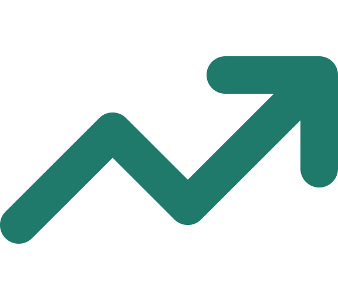
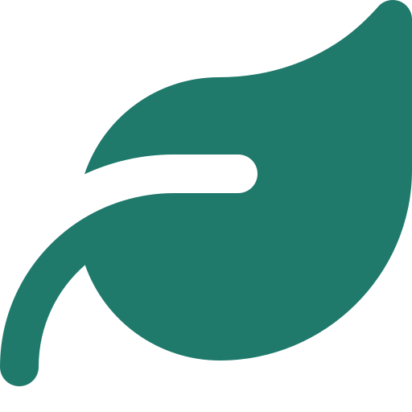
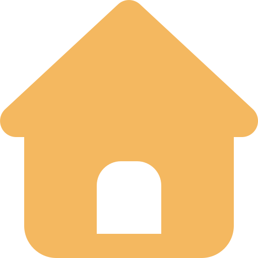
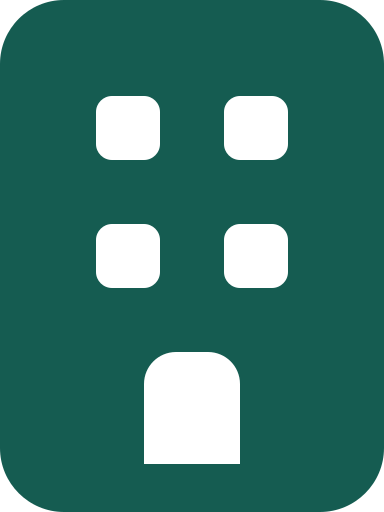
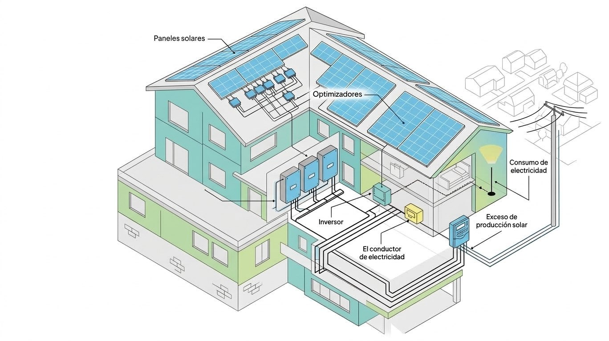
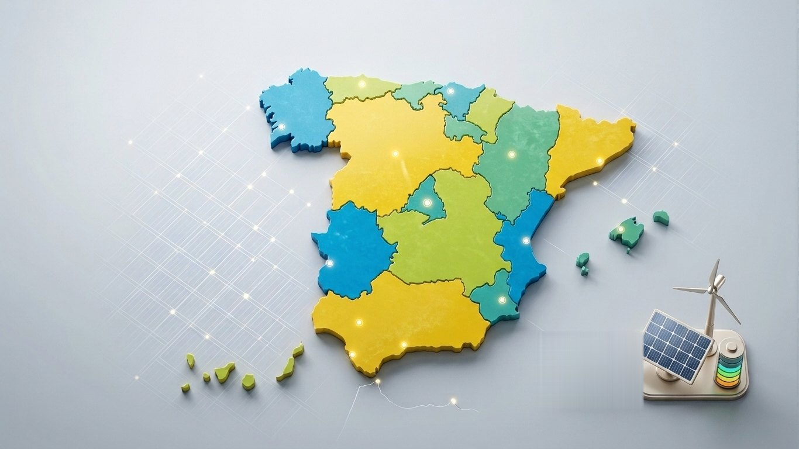
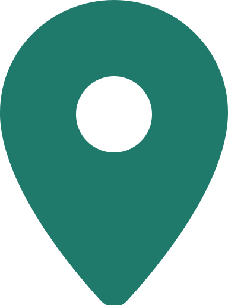
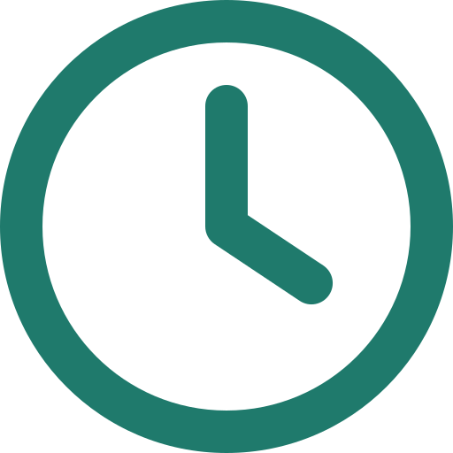

NuevoEstudio de tu tejado gratis en 48 h
Ahorra más con las placas solares
Diseñamos, instalamos y mantenemos sistemas fotovoltaicos para hogares y negocios. Menos factura y más independencia energética, con ingeniería certificada.
NuevoEstudio de tu tejado gratis en 48 h
Diseñamos, instalamos y mantenemos sistemas fotovoltaicos para hogares y negocios. Menos factura y más independencia energética, con ingeniería certificada.
Quiénes somos
Solares Energía diseña e instala sistemas fotovoltaicos para hogares y negocios. Nuestro equipo de ingenieros certificados evalúa cada tejado de forma individual: orientación, sombras, consumo real y estructura, antes de proponer una sola placa.
Trabajamos con equipos de alta eficiencia, garantía extendida y un mantenimiento pensado para que tu inversión siga rindiendo durante décadas.
Menos dependencia de la red desde el primer mes.
Protege tu presupuesto de las subidas de la luz.

Un sistema certificado revaloriza el inmueble.

Cada kWh que generas reduce tu huella de carbono.
Servicios
Desde el primer estudio de viabilidad hasta el mantenimiento anual, un único equipo responsable de cada etapa.

Sistemas a medida para casas y pisos, optimizados según tu consumo y la orientación de tu tejado.

Plantas solares para negocios, naves y edificios, pensadas para reducir el coste energético.
Revisiones periódicas, limpieza de paneles y monitorización remota del rendimiento.
Análisis técnico gratuito de tu propiedad y proyección de ahorro antes de cualquier compromiso.
Gestionamos permisos, conexión a red y las ayudas disponibles en tu comunidad.
Cobertura de equipos e instalación con seguimiento posventa durante toda la vida útil del sistema.
Cómo funciona

Captan la luz del sol y la convierten en corriente continua. Los colocamos en la zona del tejado con más horas de sol y sin sombras.
Van debajo de cada panel y hacen que cada uno rinda al máximo, aunque otro tenga sombra o suciedad.
Convierte la corriente continua de los paneles en corriente alterna, la que usan los enchufes y electrodomésticos de tu casa.
Lleva la energía del inversor a la instalación de la vivienda con las protecciones necesarias.
Mide la energía que consumes de la red y la que le inyectas. Los excedentes se compensan en tu factura.
Lo primero que haces con tu energía es usarla: luces, electrodomésticos, climatización o el coche eléctrico.
Lo que no consumes sale a la red eléctrica y tu compañía te lo descuenta. Con batería, lo guardas para la noche.
Simulador
Mueve los controles y mira al momento la instalación que necesitas, lo que ahorras y cómo se reparte tu energía a lo largo del día.
de ahorro al año en tu factura (estimación)
Cálculo orientativo con un precio medio de 0,20 €/kWh. Tu estudio gratuito incluye una simulación con tu consumo real.
Quiero mi estudio con estos datosPlanes
Tres formas de empezar a producir tu propia energía. Todas incluyen estudio, instalación, legalización y monitorización.
Panel monocristalino con 12 años de garantía.
Más elegido
Panel full black con 25 años de garantía.
Novedad
Todo incluido con cuota fija mensual.
Proceso
Analizamos tu tejado y tu consumo actual, en persona o con imágenes por satélite.
Dimensionamos el sistema según orientación, sombras y presupuesto.
Nuestro equipo certificado instala paneles, inversor y cableado en 1 a 3 días.
Activamos el sistema, lo legalizamos y seguimos su rendimiento desde la app.
Presencia en España
Elige tu comunidad para ver cuánta energía produce al año cada kilovatio instalado en tu zona.

Opiniones
Desde la instalación, nuestra factura bajó más de lo que esperábamos. El equipo explicó cada paso sin tecnicismos.
Instalaron el sistema en nuestra nave sin detener la actividad ni un solo día. Muy profesionales.
El estudio de viabilidad fue gratuito y muy detallado. Hoy generamos más energía de la que consumimos.
Preguntas frecuentes
Depende de tu consumo, la orientación del tejado y el tamaño del sistema. En el estudio gratuito te damos una proyección personalizada; el simulador de esta página te da una primera idea.
Una instalación residencial típica se hace en 1 a 3 días, una vez aprobados el diseño y los permisos.
Todos los sistemas incluyen garantía de equipos y de instalación, con soporte técnico durante toda su vida útil.
Sí. Ofrecemos financiación y cuota fija mensual, y revisamos contigo las ayudas y bonificaciones de tu comunidad y tu ayuntamiento.
Sí, siguen produciendo con luz difusa, aunque menos que en días de sol. El diseño del sistema ya tiene en cuenta esa variación.
Contacto
Cuéntanos qué instalación necesitas y te enviamos una propuesta con tu ahorro estimado en menos de 48 horas.

